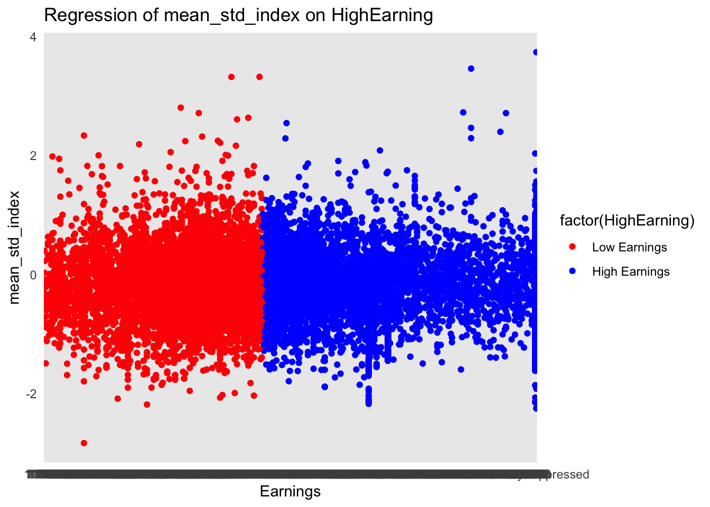

── Attaching core tidyverse packages ──────────────────────── tidyverse 2.0.0 ──
✔ dplyr 1.1.4 ✔ readr 2.1.4
✔ forcats 1.0.0 ✔ stringr 1.5.1
✔ ggplot2 3.4.4 ✔ tibble 3.2.1
✔ lubridate 1.9.3 ✔ tidyr 1.3.0
✔ purrr 1.0.2
── Conflicts ────────────────────────────────────────── tidyverse_conflicts() ──
✖ dplyr::filter() masks stats::filter()
✖ dplyr::lag() masks stats::lag()
ℹ Use the conflicted package (<http://conflicted.r-lib.org/>) to force all conflicts to become errorsDEA Write Up
Loading Relevant Libraries
Adding Google Trends Data
Warning: One or more parsing issues, call `problems()` on your data frame for details,
e.g.:
dat <- vroom(...)
problems(dat)Rows: 2825 Columns: 6
── Column specification ────────────────────────────────────────────────────────
Delimiter: ","
chr (3): schname, keyword, monthorweek
dbl (3): schid, keynum, index
ℹ Use `spec()` to retrieve the full column specification for this data.
ℹ Specify the column types or set `show_col_types = FALSE` to quiet this message.Warning: One or more parsing issues, call `problems()` on your data frame for details,
e.g.:
dat <- vroom(...)
problems(dat)Rows: 173949 Columns: 6
── Column specification ────────────────────────────────────────────────────────
Delimiter: ","
chr (3): schname, keyword, monthorweek
dbl (3): schid, keynum, index
ℹ Use `spec()` to retrieve the full column specification for this data.
ℹ Specify the column types or set `show_col_types = FALSE` to quiet this message.
Rows: 168242 Columns: 6
── Column specification ────────────────────────────────────────────────────────
Delimiter: ","
chr (3): schname, keyword, monthorweek
dbl (3): schid, keynum, index
ℹ Use `spec()` to retrieve the full column specification for this data.
ℹ Specify the column types or set `show_col_types = FALSE` to quiet this message.Warning: One or more parsing issues, call `problems()` on your data frame for details,
e.g.:
dat <- vroom(...)
problems(dat)Rows: 139749 Columns: 6
── Column specification ────────────────────────────────────────────────────────
Delimiter: ","
chr (3): schname, keyword, monthorweek
dbl (3): schid, keynum, index
ℹ Use `spec()` to retrieve the full column specification for this data.
ℹ Specify the column types or set `show_col_types = FALSE` to quiet this message.
Rows: 175729 Columns: 6
── Column specification ────────────────────────────────────────────────────────
Delimiter: ","
chr (3): schname, keyword, monthorweek
dbl (3): schid, keynum, index
ℹ Use `spec()` to retrieve the full column specification for this data.
ℹ Specify the column types or set `show_col_types = FALSE` to quiet this message.Warning: One or more parsing issues, call `problems()` on your data frame for details,
e.g.:
dat <- vroom(...)
problems(dat)Rows: 152884 Columns: 6
── Column specification ────────────────────────────────────────────────────────
Delimiter: ","
chr (3): schname, keyword, monthorweek
dbl (3): schid, keynum, index
ℹ Use `spec()` to retrieve the full column specification for this data.
ℹ Specify the column types or set `show_col_types = FALSE` to quiet this message.Warning: One or more parsing issues, call `problems()` on your data frame for details,
e.g.:
dat <- vroom(...)
problems(dat)Rows: 106965 Columns: 6
── Column specification ────────────────────────────────────────────────────────
Delimiter: ","
chr (3): schname, keyword, monthorweek
dbl (3): schid, keynum, index
ℹ Use `spec()` to retrieve the full column specification for this data.
ℹ Specify the column types or set `show_col_types = FALSE` to quiet this message.
Rows: 115042 Columns: 6
── Column specification ────────────────────────────────────────────────────────
Delimiter: ","
chr (3): schname, keyword, monthorweek
dbl (3): schid, keynum, index
ℹ Use `spec()` to retrieve the full column specification for this data.
ℹ Specify the column types or set `show_col_types = FALSE` to quiet this message.
Rows: 67236 Columns: 6
── Column specification ────────────────────────────────────────────────────────
Delimiter: ","
chr (3): schname, keyword, monthorweek
dbl (3): schid, keynum, index
ℹ Use `spec()` to retrieve the full column specification for this data.
ℹ Specify the column types or set `show_col_types = FALSE` to quiet this message.
Rows: 306790 Columns: 6
── Column specification ────────────────────────────────────────────────────────
Delimiter: ","
chr (3): schname, keyword, monthorweek
dbl (3): schid, keynum, index
ℹ Use `spec()` to retrieve the full column specification for this data.
ℹ Specify the column types or set `show_col_types = FALSE` to quiet this message.
Rows: 513 Columns: 6
── Column specification ────────────────────────────────────────────────────────
Delimiter: ","
chr (3): schname, keyword, monthorweek
dbl (3): schid, keynum, index
ℹ Use `spec()` to retrieve the full column specification for this data.
ℹ Specify the column types or set `show_col_types = FALSE` to quiet this message.
Rows: 183816 Columns: 6
── Column specification ────────────────────────────────────────────────────────
Delimiter: ","
chr (3): schname, keyword, monthorweek
dbl (3): schid, keynum, index
ℹ Use `spec()` to retrieve the full column specification for this data.
ℹ Specify the column types or set `show_col_types = FALSE` to quiet this message.`summarise()` has grouped output by 'schname'. You can override using the
`.groups` argument.# A tibble: 6 × 3
# Groups: schname [2]
schname monthly_date mean_std_index
<chr> <date> <dbl>
1 40% NA NaN
2 aaniiih nakoda college 2013-03-01 2.12
3 aaniiih nakoda college 2013-04-01 -0.728
4 aaniiih nakoda college 2013-05-01 -0.694
5 aaniiih nakoda college 2013-06-01 0.0186
6 aaniiih nakoda college 2013-07-01 0.145 Reading in scorecard data
Rows: 7804 Columns: 122
── Column specification ────────────────────────────────────────────────────────
Delimiter: ","
chr (115): INSTNM, CITY, STABBR, INSTURL, NPCURL, LOCALE, HBCU, PBI, ANNHI, ...
dbl (7): UNITID, OPEID, opeid6, HCM2, PREDDEG, CONTROL, CURROPER
ℹ Use `spec()` to retrieve the full column specification for this data.
ℹ Specify the column types or set `show_col_types = FALSE` to quiet this message.Importing Id_name_data and cleaning for merger
# A tibble: 6 × 125
# Groups: schname [1]
schname monthly_date mean_std_index unitid opeid opeid6 INSTNM CITY STABBR
<chr> <date> <dbl> <dbl> <dbl> <dbl> <chr> <chr> <chr>
1 abilene … 2015-09-01 0.356 222178 353700 3537 Abile… Abil… TX
2 abilene … 2015-10-01 0.0598 222178 353700 3537 Abile… Abil… TX
3 abilene … 2015-11-01 -0.404 222178 353700 3537 Abile… Abil… TX
4 abilene … 2015-12-01 -1.26 222178 353700 3537 Abile… Abil… TX
5 abilene … 2016-01-01 -0.148 222178 353700 3537 Abile… Abil… TX
6 abilene … 2016-02-01 -0.458 222178 353700 3537 Abile… Abil… TX
# ℹ 116 more variables: INSTURL <chr>, NPCURL <chr>, HCM2 <dbl>, PREDDEG <dbl>,
# CONTROL <dbl>, LOCALE <chr>, HBCU <chr>, PBI <chr>, ANNHI <chr>,
# TRIBAL <chr>, AANAPII <chr>, HSI <chr>, NANTI <chr>, MENONLY <chr>,
# WOMENONLY <chr>, RELAFFIL <chr>, SATVR25 <chr>, SATVR75 <chr>,
# SATMT25 <chr>, SATMT75 <chr>, SATWR25 <chr>, SATWR75 <chr>, SATVRMID <chr>,
# SATMTMID <chr>, SATWRMID <chr>, ACTCM25 <chr>, ACTCM75 <chr>,
# ACTEN25 <chr>, ACTEN75 <chr>, ACTMT25 <chr>, ACTMT75 <chr>, …Regression Portion
Warning in log(mean_std_index): NaNs producedNOTE: 8,837 observations removed because of NA values (LHS: 8,837). reg_model
Dependent Var.: log(mean_std_index)
Constant 41.48*** (4.518)
HighEarning 0.2692 (0.4241)
LowEarning 0.2567 (0.4242)
monthly_date -0.0026*** (0.0003)
_______________ ___________________
S.E. type IID
Observations 4,904
R2 0.01873
Adj. R2 0.01813
---
Signif. codes: 0 '***' 0.001 '**' 0.01 '*' 0.05 '.' 0.1 ' ' 1OLS estimation, Dep. Var.: log(mean_std_index)
Observations: 4,904
Standard-errors: IID
Estimate Std. Error t value Pr(>|t|)
(Intercept) 41.480347 4.517543 9.182058 < 2.2e-16 ***
HighEarning 0.269206 0.424084 0.634794 0.52559
LowEarning 0.256668 0.424154 0.605129 0.54512
monthly_date -0.002579 0.000268 -9.628585 < 2.2e-16 ***
---
Signif. codes: 0 '***' 0.001 '**' 0.01 '*' 0.05 '.' 0.1 ' ' 1
RMSE: 1.19668 Adj. R2: 0.018129Graph
This graph shows the distribution of observations based on median earnings and mean standard index. this graph is separated by high earnings and low earnings
`geom_smooth()` using formula = 'y ~ x'
The question of this project was among colleges that predominantly grant bachelor’s degrees, did the release of the Scorecard shift student interest to high- earnings colleges relative to low- earning ones?
Notes about the data used:
- my data takes into account that the median income is 42,000 based off of that I determined that any salary below 42,000 is “low earning” while anything above is “high earning”
based off the information above when the regression was ran I can answer this question by stating the following:
The introduction of the College Scorecard increased search activity on Google Trends for colleges with high-earning graduates by 0.2692 units relative to what it did for colleges with low-earning graduates, with a standard error of 0.4241. This result comes from the coefficients in my regression. The t-value associated with HighEarning is 0.6348, with a p-value of 0.5256, suggesting that the coefficient is not statistically significant. Similarly, for LowEarning, the t-value is 0.6051 with a p-value of 0.5451, indicating no statistical significance. The coefficient for monthly_date is -0.0026 with a standard error of 0.0003, and it is statistically significant (p-value < 2.2e-16). The RMSE of the model is 1.19668, and the adjusted R-squared is 0.0181.
Holding everything constant a one unit increase in high earning is associated with a 0.2692 increase in the mean standard index. However, since our p-value of 0.5256, this suggests that this coefficient isn’t statistically significant. We cannot determine if there is a relationship between high earning and mean standard index. This also holds true for low earning individuals which has a lower coefficient (.2567) and a higher P-value (0.5451). This leads me to believe that there is no correlation between the introduction of the college scorecard on high earning and low earning individuals.